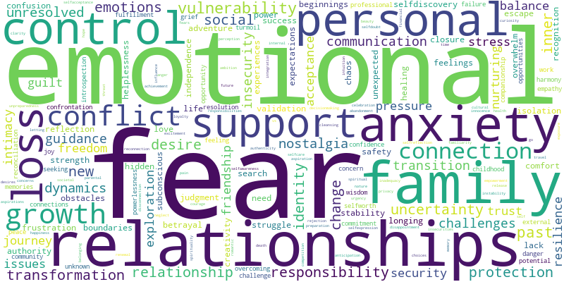
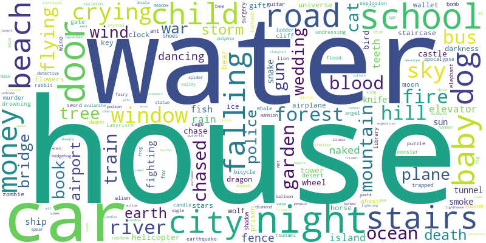

<h1 style="text-align:center;">Dreamverse State</h1>
<h2 style="text-align:center;">July 31, 2024</h2>
<div style="padding: 80px;"><html>
    <head>
        <meta charset="utf-8">
        
            <script src="lib/bindings/utils.js"></script>
            <link rel="stylesheet" href="https://cdnjs.cloudflare.com/ajax/libs/vis-network/9.1.2/dist/dist/vis-network.min.css" integrity="sha512-WgxfT5LWjfszlPHXRmBWHkV2eceiWTOBvrKCNbdgDYTHrT2AeLCGbF4sZlZw3UMN3WtL0tGUoIAKsu8mllg/XA==" crossorigin="anonymous" referrerpolicy="no-referrer" />
            <script src="https://cdnjs.cloudflare.com/ajax/libs/vis-network/9.1.2/dist/vis-network.min.js" integrity="sha512-LnvoEWDFrqGHlHmDD2101OrLcbsfkrzoSpvtSQtxK3RMnRV0eOkhhBN2dXHKRrUU8p2DGRTk35n4O8nWSVe1mQ==" crossorigin="anonymous" referrerpolicy="no-referrer"></script>
            
        
<center>
<h1></h1>
</center>

<!-- <link rel="stylesheet" href="../node_modules/vis/dist/vis.min.css" type="text/css" />
<script type="text/javascript" src="../node_modules/vis/dist/vis.js"> </script>-->
        <link
          href="https://cdn.jsdelivr.net/npm/bootstrap@5.0.0-beta3/dist/css/bootstrap.min.css"
          rel="stylesheet"
          integrity="sha384-eOJMYsd53ii+scO/bJGFsiCZc+5NDVN2yr8+0RDqr0Ql0h+rP48ckxlpbzKgwra6"
          crossorigin="anonymous"
        />
        <script
          src="https://cdn.jsdelivr.net/npm/bootstrap@5.0.0-beta3/dist/js/bootstrap.bundle.min.js"
          integrity="sha384-JEW9xMcG8R+pH31jmWH6WWP0WintQrMb4s7ZOdauHnUtxwoG2vI5DkLtS3qm9Ekf"
          crossorigin="anonymous"
        ></script>


        <center>
          <h1></h1>
        </center>
        <style type="text/css">

             #mynetwork {
                 width: 100%;
                 height: 750px;
                 background-color: #2b252f;
                 border: 1px solid lightgray;
                 position: relative;
                 float: left;
             }

             

             

             
        </style>
    </head>


    <body>
        <div class="card" style="width: 100%">
            
            
            <div id="mynetwork" class="card-body"></div>
        </div>

        
        

        <script type="text/javascript">

              // initialize global variables.
              var edges;
              var nodes;
              var allNodes;
              var allEdges;
              var nodeColors;
              var originalNodes;
              var network;
              var container;
              var options, data;
              var filter = {
                  item : '',
                  property : '',
                  value : []
              };

              

              

              // This method is responsible for drawing the graph, returns the drawn network
              function drawGraph() {
                  var container = document.getElementById('mynetwork');

                  

                  // parsing and collecting nodes and edges from the python
                  nodes = new vis.DataSet([{"color": "purple", "font": {"color": "white"}, "id": "recognition", "label": "recognition", "shape": "dot", "title": "recognition"}, {"color": "purple", "font": {"color": "white"}, "id": "selfworth", "label": "selfworth", "shape": "dot", "title": "selfworth"}, {"color": "purple", "font": {"color": "white"}, "id": "conflict", "label": "conflict", "shape": "dot", "title": "conflict"}, {"color": "purple", "font": {"color": "white"}, "id": "relationships", "label": "relationships", "shape": "dot", "title": "relationships"}, {"color": "purple", "font": {"color": "white"}, "id": "guilt", "label": "guilt", "shape": "dot", "title": "guilt"}, {"color": "red", "font": {"color": "white"}, "id": "house", "label": "house", "shape": "dot", "title": "house"}, {"color": "purple", "font": {"color": "white"}, "id": "stress", "label": "stress", "shape": "dot", "title": "stress"}, {"color": "purple", "font": {"color": "white"}, "id": "night", "label": "night", "shape": "dot", "title": "night"}, {"color": "red", "font": {"color": "white"}, "id": "fear", "label": "fear", "shape": "dot", "title": "fear"}, {"color": "red", "font": {"color": "white"}, "id": "transformation", "label": "transformation", "shape": "dot", "title": "transformation"}, {"color": "purple", "font": {"color": "white"}, "id": "guidance", "label": "guidance", "shape": "dot", "title": "guidance"}, {"color": "purple", "font": {"color": "white"}, "id": "wisdom", "label": "wisdom", "shape": "dot", "title": "wisdom"}, {"color": "red", "font": {"color": "white"}, "id": "protection", "label": "protection", "shape": "dot", "title": "protection"}, {"color": "red", "font": {"color": "white"}, "id": "anxiety", "label": "anxiety", "shape": "dot", "title": "anxiety"}, {"color": "red", "font": {"color": "white"}, "id": "responsibility", "label": "responsibility", "shape": "dot", "title": "responsibility"}, {"color": "purple", "font": {"color": "white"}, "id": "cat", "label": "cat", "shape": "dot", "title": "cat"}, {"color": "red", "font": {"color": "white"}, "id": "vulnerability", "label": "vulnerability", "shape": "dot", "title": "vulnerability"}, {"color": "red", "font": {"color": "white"}, "id": "support", "label": "support", "shape": "dot", "title": "support"}, {"color": "red", "font": {"color": "white"}, "id": "family", "label": "family", "shape": "dot", "title": "family"}, {"color": "purple", "font": {"color": "white"}, "id": "new beginnings", "label": "new beginnings", "shape": "dot", "title": "new beginnings"}, {"color": "purple", "font": {"color": "white"}, "id": "baby", "label": "baby", "shape": "dot", "title": "baby"}, {"color": "purple", "font": {"color": "white"}, "id": "door", "label": "door", "shape": "dot", "title": "door"}, {"color": "purple", "font": {"color": "white"}, "id": "uncertainty", "label": "uncertainty", "shape": "dot", "title": "uncertainty"}, {"color": "red", "font": {"color": "white"}, "id": "loss", "label": "loss", "shape": "dot", "title": "loss"}, {"color": "purple", "font": {"color": "white"}, "id": "insecurity", "label": "insecurity", "shape": "dot", "title": "insecurity"}, {"color": "purple", "font": {"color": "white"}, "id": "dog", "label": "dog", "shape": "dot", "title": "dog"}, {"color": "purple", "font": {"color": "white"}, "id": "crow", "label": "crow", "shape": "dot", "title": "crow"}, {"color": "purple", "font": {"color": "white"}, "id": "family dynamics", "label": "family dynamics", "shape": "dot", "title": "family dynamics"}, {"color": "purple", "font": {"color": "white"}, "id": "nurturing", "label": "nurturing", "shape": "dot", "title": "nurturing"}, {"color": "purple", "font": {"color": "white"}, "id": "unresolved emotions", "label": "unresolved emotions", "shape": "dot", "title": "unresolved emotions"}, {"color": "purple", "font": {"color": "white"}, "id": "past relationships", "label": "past relationships", "shape": "dot", "title": "past relationships"}, {"color": "purple", "font": {"color": "white"}, "id": "nostalgia", "label": "nostalgia", "shape": "dot", "title": "nostalgia"}, {"color": "purple", "font": {"color": "white"}, "id": "school", "label": "school", "shape": "dot", "title": "school"}, {"color": "purple", "font": {"color": "white"}, "id": "city", "label": "city", "shape": "dot", "title": "city"}, {"color": "purple", "font": {"color": "white"}, "id": "resilience", "label": "resilience", "shape": "dot", "title": "resilience"}, {"color": "purple", "font": {"color": "white"}, "id": "identity", "label": "identity", "shape": "dot", "title": "identity"}, {"color": "purple", "font": {"color": "white"}, "id": "change", "label": "change", "shape": "dot", "title": "change"}, {"color": "purple", "font": {"color": "white"}, "id": "transition", "label": "transition", "shape": "dot", "title": "transition"}, {"color": "purple", "font": {"color": "white"}, "id": "money", "label": "money", "shape": "dot", "title": "money"}, {"color": "purple", "font": {"color": "white"}, "id": "control", "label": "control", "shape": "dot", "title": "control"}, {"color": "purple", "font": {"color": "white"}, "id": "overwhelm", "label": "overwhelm", "shape": "dot", "title": "overwhelm"}, {"color": "purple", "font": {"color": "white"}, "id": "chase", "label": "chase", "shape": "dot", "title": "chase"}, {"color": "purple", "font": {"color": "white"}, "id": "water", "label": "water", "shape": "dot", "title": "water"}, {"color": "purple", "font": {"color": "white"}, "id": "friendship", "label": "friendship", "shape": "dot", "title": "friendship"}, {"color": "purple", "font": {"color": "white"}, "id": "crush", "label": "crush", "shape": "dot", "title": "crush"}, {"color": "purple", "font": {"color": "white"}, "id": "authority", "label": "authority", "shape": "dot", "title": "authority"}, {"color": "purple", "font": {"color": "white"}, "id": "social dynamics", "label": "social dynamics", "shape": "dot", "title": "social dynamics"}, {"color": "purple", "font": {"color": "white"}, "id": "forest", "label": "forest", "shape": "dot", "title": "forest"}, {"color": "purple", "font": {"color": "white"}, "id": "grief", "label": "grief", "shape": "dot", "title": "grief"}, {"color": "purple", "font": {"color": "white"}, "id": "helplessness", "label": "helplessness", "shape": "dot", "title": "helplessness"}, {"color": "purple", "font": {"color": "white"}, "id": "personal growth", "label": "personal growth", "shape": "dot", "title": "personal growth"}, {"color": "purple", "font": {"color": "white"}, "id": "bus", "label": "bus", "shape": "dot", "title": "bus"}, {"color": "purple", "font": {"color": "white"}, "id": "selfdiscovery", "label": "selfdiscovery", "shape": "dot", "title": "selfdiscovery"}, {"color": "purple", "font": {"color": "white"}, "id": "war", "label": "war", "shape": "dot", "title": "war"}, {"color": "purple", "font": {"color": "white"}, "id": "rain", "label": "rain", "shape": "dot", "title": "rain"}]);
                  edges = new vis.DataSet([{"from": "recognition", "to": "selfworth", "value": 4}, {"from": "selfworth", "to": "school", "value": 4}, {"from": "conflict", "to": "relationships", "value": 4}, {"from": "conflict", "to": "guilt", "value": 4}, {"from": "conflict", "to": "house", "value": 4}, {"from": "conflict", "to": "stress", "value": 4}, {"from": "relationships", "to": "house", "value": 4}, {"from": "relationships", "to": "support", "value": 5}, {"from": "guilt", "to": "anxiety", "value": 6}, {"from": "guilt", "to": "responsibility", "value": 4}, {"from": "house", "to": "night", "value": 4}, {"from": "house", "to": "protection", "value": 7}, {"from": "house", "to": "door", "value": 4}, {"from": "house", "to": "transformation", "value": 9}, {"from": "house", "to": "vulnerability", "value": 6}, {"from": "house", "to": "uncertainty", "value": 4}, {"from": "house", "to": "anxiety", "value": 6}, {"from": "house", "to": "fear", "value": 5}, {"from": "house", "to": "loss", "value": 8}, {"from": "house", "to": "family", "value": 6}, {"from": "house", "to": "insecurity", "value": 5}, {"from": "house", "to": "dog", "value": 4}, {"from": "house", "to": "baby", "value": 5}, {"from": "house", "to": "crow", "value": 5}, {"from": "house", "to": "responsibility", "value": 5}, {"from": "house", "to": "family dynamics", "value": 5}, {"from": "house", "to": "nurturing", "value": 4}, {"from": "stress", "to": "anxiety", "value": 7}, {"from": "stress", "to": "fear", "value": 4}, {"from": "night", "to": "fear", "value": 4}, {"from": "night", "to": "transformation", "value": 7}, {"from": "fear", "to": "protection", "value": 5}, {"from": "fear", "to": "vulnerability", "value": 13}, {"from": "fear", "to": "anxiety", "value": 14}, {"from": "fear", "to": "responsibility", "value": 4}, {"from": "fear", "to": "support", "value": 4}, {"from": "fear", "to": "transformation", "value": 4}, {"from": "fear", "to": "family", "value": 4}, {"from": "transformation", "to": "vulnerability", "value": 4}, {"from": "transformation", "to": "change", "value": 5}, {"from": "transformation", "to": "identity", "value": 8}, {"from": "transformation", "to": "school", "value": 4}, {"from": "guidance", "to": "wisdom", "value": 4}, {"from": "protection", "to": "anxiety", "value": 11}, {"from": "protection", "to": "responsibility", "value": 5}, {"from": "protection", "to": "cat", "value": 4}, {"from": "protection", "to": "vulnerability", "value": 7}, {"from": "protection", "to": "support", "value": 4}, {"from": "protection", "to": "family", "value": 4}, {"from": "anxiety", "to": "city", "value": 7}, {"from": "anxiety", "to": "vulnerability", "value": 8}, {"from": "anxiety", "to": "responsibility", "value": 11}, {"from": "anxiety", "to": "support", "value": 6}, {"from": "anxiety", "to": "loss", "value": 6}, {"from": "anxiety", "to": "family", "value": 4}, {"from": "anxiety", "to": "uncertainty", "value": 4}, {"from": "anxiety", "to": "change", "value": 4}, {"from": "anxiety", "to": "transition", "value": 4}, {"from": "anxiety", "to": "money", "value": 4}, {"from": "anxiety", "to": "dog", "value": 4}, {"from": "anxiety", "to": "control", "value": 5}, {"from": "anxiety", "to": "overwhelm", "value": 5}, {"from": "anxiety", "to": "family dynamics", "value": 4}, {"from": "responsibility", "to": "new beginnings", "value": 4}, {"from": "responsibility", "to": "vulnerability", "value": 4}, {"from": "responsibility", "to": "support", "value": 4}, {"from": "responsibility", "to": "baby", "value": 5}, {"from": "responsibility", "to": "nurturing", "value": 9}, {"from": "responsibility", "to": "cat", "value": 4}, {"from": "vulnerability", "to": "resilience", "value": 6}, {"from": "vulnerability", "to": "support", "value": 9}, {"from": "vulnerability", "to": "identity", "value": 5}, {"from": "vulnerability", "to": "dog", "value": 4}, {"from": "vulnerability", "to": "loss", "value": 4}, {"from": "support", "to": "resilience", "value": 4}, {"from": "support", "to": "nurturing", "value": 4}, {"from": "family", "to": "nostalgia", "value": 4}, {"from": "family", "to": "loss", "value": 7}, {"from": "new beginnings", "to": "baby", "value": 4}, {"from": "baby", "to": "nurturing", "value": 6}, {"from": "uncertainty", "to": "loss", "value": 4}, {"from": "loss", "to": "grief", "value": 8}, {"from": "loss", "to": "transition", "value": 4}, {"from": "loss", "to": "helplessness", "value": 5}, {"from": "insecurity", "to": "friendship", "value": 4}, {"from": "insecurity", "to": "control", "value": 4}, {"from": "unresolved emotions", "to": "past relationships", "value": 4}, {"from": "nostalgia", "to": "school", "value": 5}, {"from": "school", "to": "crush", "value": 4}, {"from": "school", "to": "authority", "value": 5}, {"from": "school", "to": "social dynamics", "value": 4}, {"from": "change", "to": "transition", "value": 4}, {"from": "chase", "to": "water", "value": 4}, {"from": "water", "to": "forest", "value": 4}, {"from": "personal growth", "to": "bus", "value": 4}, {"from": "personal growth", "to": "selfdiscovery", "value": 4}, {"from": "war", "to": "rain", "value": 4}]);

                  nodeColors = {};
                  allNodes = nodes.get({ returnType: "Object" });
                  for (nodeId in allNodes) {
                    nodeColors[nodeId] = allNodes[nodeId].color;
                  }
                  allEdges = edges.get({ returnType: "Object" });
                  // adding nodes and edges to the graph
                  data = {nodes: nodes, edges: edges};

                  var options = {
    "configure": {
        "enabled": false
    },
    "edges": {
        "color": {
            "inherit": true
        },
        "smooth": {
            "enabled": true,
            "type": "dynamic"
        }
    },
    "interaction": {
        "dragNodes": true,
        "hideEdgesOnDrag": false,
        "hideNodesOnDrag": false
    },
    "physics": {
        "enabled": true,
        "stabilization": {
            "enabled": true,
            "fit": true,
            "iterations": 1000,
            "onlyDynamicEdges": false,
            "updateInterval": 50
        }
    }
};

                  


                  

                  network = new vis.Network(container, data, options);

                  

                  

                  


                  

                  return network;

              }
              drawGraph();
        </script>
    </body>
</html></div><h1 style="text-align:center;"> </h1>
<h2 style="text-align:center;">Shared Themes</h2>
<div style="text-align:center;"></div>
<h1 style="text-align:center;"> </h1>
<h2 style="text-align:center;">Shared Symbols</h2>
<div style="text-align:center;"></div>